地政学
ヤンゴンは旧首都であり港湾都市です。官庁の多くはネピドーへ移りましたが、大使館、企業、報道、大学、市民運動の記憶が残り、国家の緊張は街路と市場に表れます。軍政、抗議、検問、停電も生活と切り離せません。

🇲🇲 ミャンマー / アジア / World City Atlas
シュエダゴン・パゴダ、植民地期の街路、河港、湖畔住宅地、露店市場、軍政と民主化運動の記憶が重なる旧首都です。経済の中心でありながら、祈り、移動、停電、物価、移住労働が日常を形作ります。
都市の骨格
ヤンゴンはヤンゴン川とバゴー川の水運、シュエダゴンを頂点にする宗教景観、碁盤目の旧市街、北へ伸びる住宅地と工業地で成り立ちます。首都機能はネピドーへ移っても、人、商品、祈り、抗議の記憶はここに集まります。
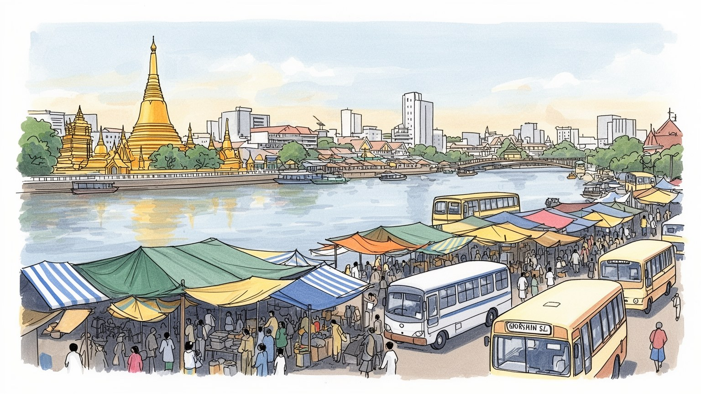
ヤンゴンは旧首都であり港湾都市です。官庁の多くはネピドーへ移りましたが、大使館、企業、報道、大学、市民運動の記憶が残り、国家の緊張は街路と市場に表れます。軍政、抗議、検問、停電も生活と切り離せません。
河港、卸売市場、縫製工場、食品加工、建設、運送、銀行、通信が都市を支えます。地方から来た若者、露店商、港湾労働者、縫製労働者、配車運転手が多く、通貨安、物価、停電、賃金不安が働く条件を左右します。
シュエダゴンを中心に、僧院、寄進、満月の参拝、精霊信仰、華人寺院、教会、モスクが日常を支えます。ビルマ語文化、映画、茶店、屋台、植民地建築、少数民族の移住が混ざり、祈りと商売が近い都市です。音も多彩です。
観光客は仏塔、湖、市場、古い官庁街を巡りますが、住民には交通渋滞、浸水、停電、家賃、医療、教育、仕事の不安があります。茶店や路上市場は生活の場であり、日常を壊さず読む視点が必要です。夜も重なります。
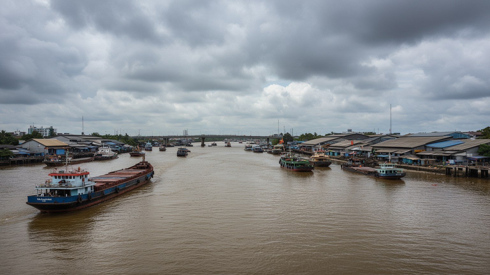
ヤンゴンの都市骨格は、海に直接開く港ではなく、ヤンゴン川、バゴー川、ライン川が作る低湿な河口部にあります。旧市街の碁盤目街路は川岸の埠頭、倉庫、旧官庁、商店街へ向かって組まれ、北側には湖、丘、寺院、住宅地があります。河港はコンテナだけでなく、米、豆、建材、燃料、生活雑貨を動かし、国内の農村と海外市場をつなぎます。雨季には道路の冠水、排水の詰まり、交通渋滞が日常を遅らせ、乾季には暑さと埃が移動を厳しくします。都市を見る入口は摩天楼ではなく、埠頭で働く人、フェリーを待つ人、坂を上る巡礼者、環状線の駅前市場です。川は景観であると同時に物流、浸水、移動、貧困を同時に運びます。旧市街の密度と北部の住宅地、郊外の工業地がこの水の都市を支えています。中心部から少し離れると、低層住宅、僧院、工場、空き地、未舗装の道が混ざり、都市化が段階的に進む様子が見えます。橋や幹線道路は生活圏を広げますが、交通費と移動時間も増やします。港と川を軸に読むと、ヤンゴンは首都を失った都市ではなく、国の物資と人の流れを握る結節点として見えてきます。都市計画の焦点もこの地形から生まれます。排水を広げ、公共交通を整え、港の機能を守りながら住民の水辺へのアクセスを確保できるかが、将来の暮らしやすさを左右します。川を背にした旧市街だけでなく、川と共に更新する都市として見る必要があります。
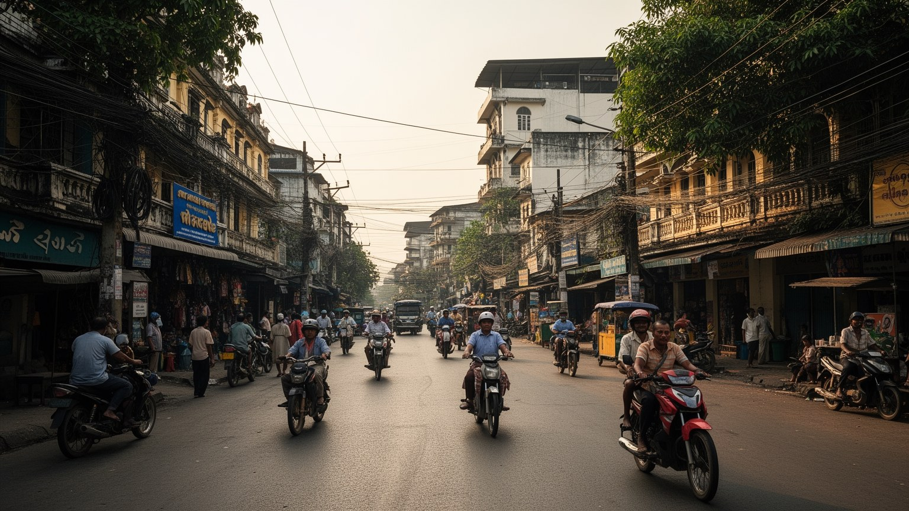
ミャンマーの首都はネピドーへ移りましたが、ヤンゴンは政治の記憶が最も濃い都市であり続けています。植民地期の官庁街、独立運動の記憶、大学周辺の学生運動、民主化を求める抗議、軍政下の監視と検問は、街路の使われ方に刻まれています。大使館、国際機関、メディア、企業、法律事務所は今もここに多く、国内外がミャンマーを観察する窓口でもあります。政治は国会議事堂だけでなく、閉められた商店、夜間の外出、通信の不安、現金の不足、街角の噂として経験されます。ヤンゴンを読むには、旧首都としての格式より、市民がどの広場で集まり、どの道を避け、どの宗教施設や茶店で情報を交わすかを見る必要があります。国家の中枢が遠くへ移っても、社会の緊張と希望は最大都市の日常に残っています。宗教施設、大学、病院、裁判所、古い官庁街は、政治的な記憶を呼び戻す場所でもあります。抗議が抑えられる時ほど、沈黙、閉店、移動の少なさ、家族の連絡方法が都市の空気を変えます。ヤンゴンの政治性は、記念碑の説明ではなく、人々が不安の中で日常を保つ方法に現れます。だからこの都市では、交通規制や通信の変化、現金を求める列、大学の静けさまで政治の一部になります。旧首都の地位は過去の肩書きではなく、国家と市民社会の関係を読み解く手がかりです。茶店やSNSの短い情報も、生活判断を支える細い回路になります。
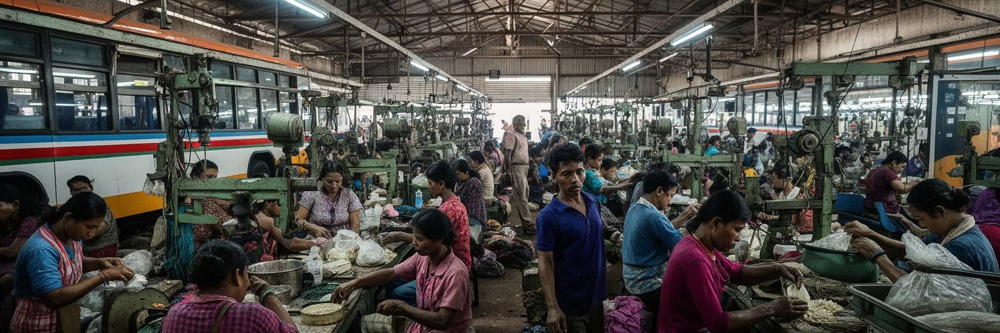
ヤンゴン経済は、港湾物流、卸売市場、縫製工場、食品加工、建設、通信、銀行、小売、宗教観光の細かな結びつきで動きます。港では輸入品と農産物が入れ替わり、市場では米、魚、豆、香辛料、布、携帯電話部品が朝から流れます。郊外の工業団地には地方から来た若い労働者が多く、縫製は国際的な発注、賃金、電力、物流の変化に左右されます。中心部のオフィスやホテルも、清掃、警備、厨房、配達、修理、露店商に支えられます。通貨の下落や輸入制限、停電、燃料不足は、企業の数字だけでなく昼食代、通勤費、家族への仕送りに直結します。ヤンゴンの産業を見るなら、港のクレーンや新しいビルだけでなく、夜明けの市場、混雑したバス、工場の寮、歩道の物売りまで含める必要があります。都市の豊かさは、働く人が暮らしを保てるかで測られます。公式な雇用の外側では、日雇い、露店、修理、運搬、家事労働が家計を支えます。規制や取り締まりが変わるだけで、歩道の商売や小さな運送業は大きな影響を受けます。女性労働者は縫製、販売、家庭内のケアを重ねて担うことも多く、賃金だけでなく安全な通勤と住まいも重要です。経済の回復を語る時は、外資や輸出額だけでなく、電力、現金、交通、保育、医療が働く人へ届くかを見なければなりません。労働の安定がなければ港も工場も日常を支え続けられません。
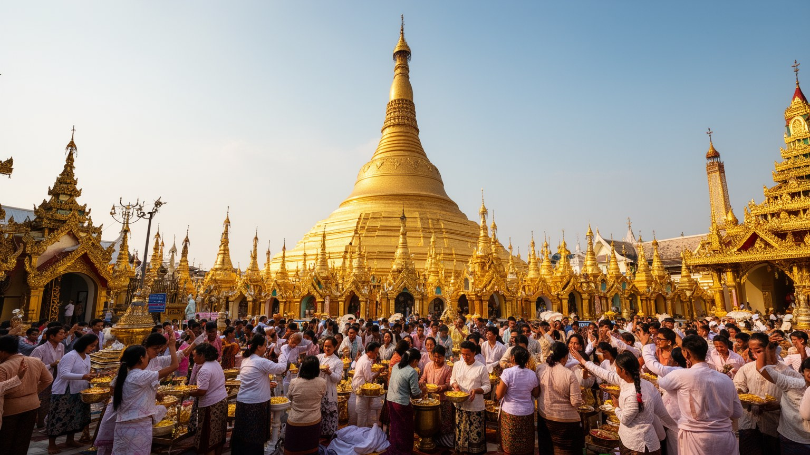
シュエダゴン・パゴダは観光名所である前に、ヤンゴンの時間を整える宗教的な中心です。金色の仏塔は丘の上から街を見下ろし、満月の日、誕生日の曜日ごとの祈り、家族の寄進、僧侶への布施、巡礼者の歩みを集めます。周辺には僧院、屋台、花売り、祈願の品を売る店があり、信仰と小商いが同じ参道に並びます。上座部仏教は都市の倫理、葬送、教育、慈善を支えますが、精霊信仰、華人寺院、ヒンドゥー寺院、教会、モスクも市内に残り、多民族都市の歴史を示します。宗教施設は災害や政治的緊張の時に、人が集まり情報を得る場所にもなります。ヤンゴンの信仰を読むとは、輝く仏塔の写真だけでなく、裸足で歩く床の熱さ、寄進の経済、祈りの後の茶、寺院の周りで働く人の生活を見ることです。祈りは日常の不安と結びついています。僧院学校や慈善診療は、制度が届きにくい人への支えにもなります。一方で、宗教は多数派の安心を作るだけでなく、少数派の不安や差別とも隣り合います。都市の信仰を丁寧に見ることは、礼拝の美しさと、共に暮らすための緊張を同時に読むことです。仏塔の周囲では、巡礼者、物売り、清掃する人、寄付を集める人がそれぞれ都市の宗教経済を作ります。祈りの空間は静けさだけでなく、労働、交通、家族の記憶を含む生活の舞台です。満月の日の人波は、都市の不安と願いを同じ丘へ集めます。
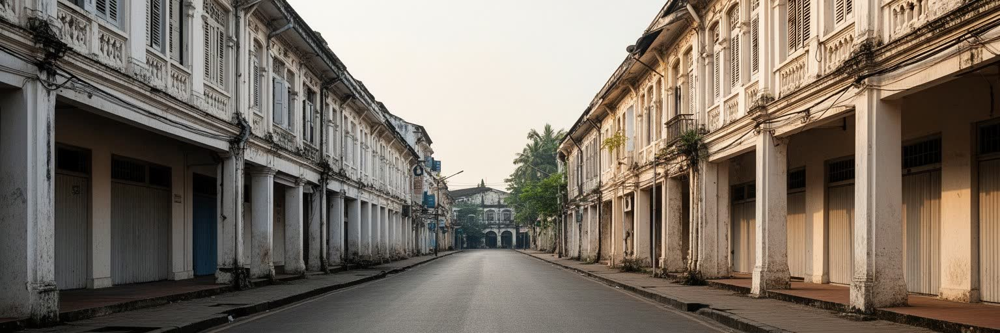
ヤンゴン旧市街には、英国植民地期の官庁、裁判所、銀行、鉄道駅、商館、集合住宅が残ります。赤煉瓦やアーケードは写真映えする遺産ですが、その歴史は米の輸出、港湾支配、移民労働、独立運動、戦争と結びついています。建物の保存は観光資源づくりだけではありません。老朽化した階段、雨漏り、家賃、権利関係、居住者の退去、公共施設としての再利用をどう扱うかという生活の論点です。旧官庁を高級ホテルや文化施設へ変えることは街に新しい価値を与えますが、日常の商店や住民が排除されれば記憶は薄くなります。ヤンゴンの街路は、植民地の秩序を示す碁盤目でありながら、露店、茶店、寺院、インド系や華人系の商いによって使い直されてきました。遺産を読むには、建築様式だけでなく、誰が建て、誰が働き、誰が今そこに住み、どの記憶が語られないまま残るのかを見る必要があります。保存の費用を誰が負担するのかも大きな争点です。修復が進めば観光や教育の場になりますが、投資が止まれば建物は危険になり、住民は不安定な環境に置かれます。ヤンゴンの遺産は静かな展示物ではなく、現在の貧困、権利、商売、記憶が絡む生きた街路です。歩道の露店や古い共同住宅があるからこそ、建築は生活の中で読めます。保存と再開発の均衡は、都市の記憶を誰のために残すのかという問いでもあります。
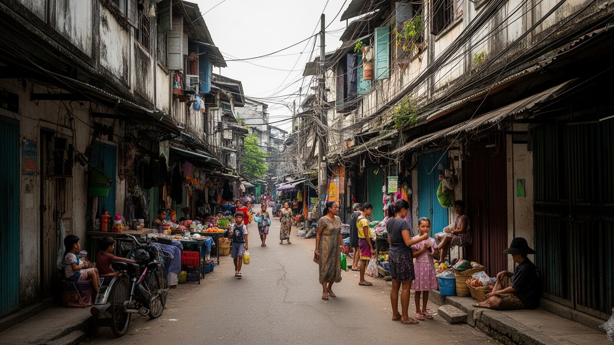
ヤンゴンの日常は、朝の市場、茶店、混雑したバス、配車アプリ、寺院の鐘、停電に備えた発電機の音で始まります。中心部の古い集合住宅は仕事や市場に近い一方、階段、排水、暑さ、過密が重く、郊外の新興住宅地は広さを得ても通勤と交通費が増えます。地方から来た若者は工場や店で働き、家族へ仕送りをしながら寮や共同住宅で暮らすことがあります。物価上昇は米、油、燃料、家賃、学費に及び、医療や教育の選択にも影響します。茶店や路上市場は単なる飲食の場所ではなく、情報交換、休息、仕事探し、政治の噂が交わる公共空間です。雨季の浸水や停電は家事、冷蔵、通信、夜の勉強を難しくします。ヤンゴンの暮らしを理解するには、観光名所よりも、誰がどの時間に水を汲み、どの道で渋滞に耐え、どの店で現金を節約するかを見る必要があります。生活の強さは小さな工夫に宿ります。住宅の選択は、広さよりも通勤、停電時の水、家族の近さ、学校、病院への行きやすさで決まります。女性や高齢者、子どもにとっては、夜道の安全、階段の負担、近所の助け合いも重要です。便利さの裏側にある日々の調整が、ヤンゴンの生活都市としての実像を作っています。公共空間が少ない地区では、寺院の境内、茶店の椅子、路地の木陰が貴重な休息場所になります。住まいを考えることは、都市の中で安心して座れる場所を考えることでもあります。
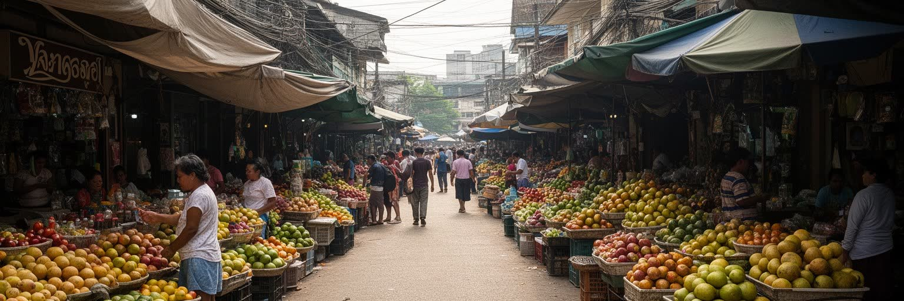
ヤンゴンの文化は、仏塔と旧官庁だけでなく、茶店、映画館、市場、屋台、書店、大学、音楽、サッカー、家族の食卓に広がります。モヒンガー、ラペットゥ、シャン麺、カレー、インド系の軽食、華人系の麺料理は、多民族都市の歴史を舌で示します。茶店では甘いミルクティーを前に、新聞、携帯電話、仕事の話、政治の噂が交わり、世代や職業を越える都市の居間になります。映画や音楽は検閲や資金不足の影響を受けながらも、若い表現者が言葉、ファッション、映像で現実を記録します。文化は華やかなイベントだけではありません。僧院学校の寄付、家族行事の料理、雨の日の市場、路地の修理店、古い本を売る露店にも宿ります。ヤンゴンを文化都市として読むには、民族衣装や仏塔の美しさを消費するだけでなく、ビルマ語、少数民族の移住、インド系と華人系の商い、若者の表現が同じ街で交差する様子を見る必要があります。食はその交差点です。食堂の一皿は、地方から届く米や魚、移住者の味、宗教上の食習慣、輸入品の値段を映します。市場で何が高くなり、何が手に入りにくいかは、家計と政治の変化を伝えます。ヤンゴンの食文化は、楽しみであると同時に生活の耐久力を測る指標です。文化を支える店や屋台が残るかどうかは、家賃、規制、治安、若者の働く場所に左右されます。表現と食の場を守ることは、都市の記憶を守ることでもあります。
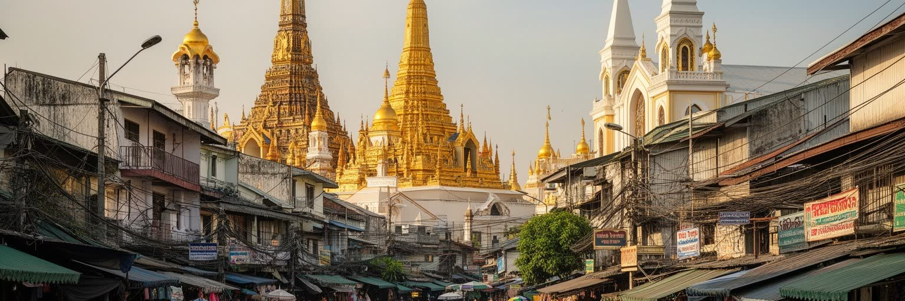
ヤンゴン観光は、シュエダゴン・パゴダ、スーレー・パゴダ、ボージョーアウンサン市場、カンドージー湖、インヤー湖、旧官庁街、環状線、川辺の船着き場を組み合わせることで立体的になります。金色の仏塔と湖畔の夕景は強い印象を残しますが、都市の理解は市場の値段交渉、雨で濡れた歩道、古い建物の修理跡、交通渋滞、祈りの時間にもあります。観光は外貨収入や保存の動機になりますが、政治状況、治安、物価、住民の生活への配慮を抜きに語れません。宗教施設では裸足、服装、写真、寄進への敬意が求められます。旧市街では建物を眺めるだけでなく、そこに住む人や働く人の邪魔をしない距離感が必要です。ヤンゴンの魅力は、整った観光都市ではなく、祈りと商売と歴史が同じ歩道に重なるところにあります。訪れる人は名所を集めるだけでなく、日常の負担を増やさず、都市の記憶を丁寧に読む態度を持つべきです。環状線やフェリーに乗れば、中心部の名所とは違う通勤、買い物、通学の風景が見えます。観光の価値は、写真を撮る場所の多さではなく、住民の時間に触れた時に何を学べるかで深まります。ヤンゴンでは美しさと不便さが近く、敬意を持つ旅ほど都市の複雑さを理解できます。宿泊、移動、買い物の選択も都市へ影響します。地域の小店や保存活動に利益が残る形で歩くことが、観光と生活の距離を縮めます。
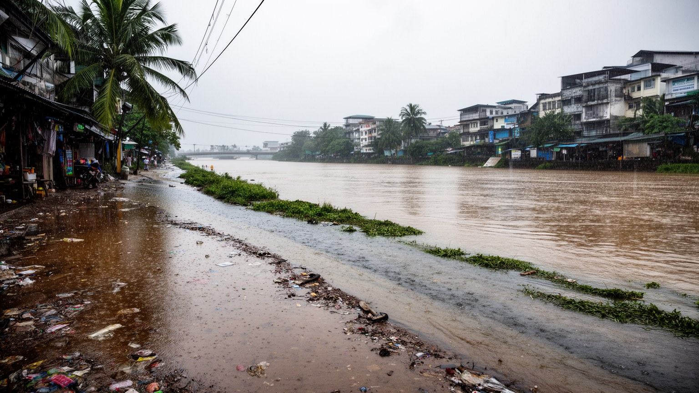
ヤンゴンの気候リスクは、熱帯モンスーンの雨、低湿地の排水、河川の水位、暑さ、停電が重なるところにあります。雨季には短時間の豪雨で道路が冠水し、歩道、バス停、市場、学校、病院への移動が難しくなります。排水路にごみが詰まると、低所得地区ほど浸水と衛生悪化を受けやすく、蚊や水系感染症の不安も増します。乾季の暑さは屋外労働者、露店商、高齢者、工場労働者を直撃し、停電は扇風機、冷蔵、通信、ポンプを止めます。気候変動は未来の抽象的な論点ではなく、すでにある貧困、住宅の弱さ、医療の不足、交通の脆さを強めます。川辺の再開発や道路整備は必要ですが、排水、緑陰、公共トイレ、避難情報、安価な住宅を同時に考えなければ、強い都市にはなりません。ヤンゴンの気候適応は、大きな堤防だけでなく、日陰を作る街路樹、清掃、地域の見守り、停電時の支援として日常に組み込まれる必要があります。気候対策は行政だけでは完結せず、住民の清掃、寺院や学校の避難機能、近所の助け合いとも結びつきます。多言語で危険を伝え、現金や通信が途切れても支援へ届く仕組みを作ることが、低湿地の大都市には欠かせません。水と暑さへの備えは生活の公平性に直結します。排水路の清掃、住宅の換気、公共交通の屋根、病院への移動路は小さく見えて命に関わります。気候リスクは都市運営の細部に宿ります。
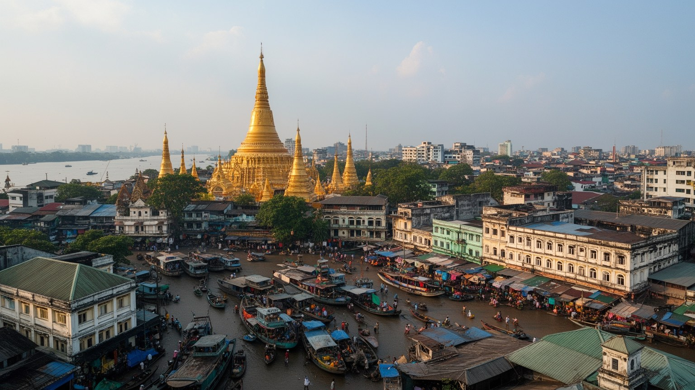
ヤンゴンは地方から来る若者、少数民族、避難を余儀なくされた人、商機を求める家族を受け止める都市です。農村で仕事が少ない時、紛争や不安が強まる時、教育や医療を求める時、人は最大都市へ向かいます。しかし到着後に待つのは、安定した職だけではありません。身分証、住民登録、家賃、言語、学校、医療、警察への不安、差別、低賃金労働が生活を分けます。郊外の工場や建設現場、中心部の店、露店、家事労働は移住者に支えられますが、都市計画は彼らの住まいや通勤を後回しにしがちです。家族への仕送りは地方経済を支える一方、本人の貯蓄や休息を削ります。ヤンゴンの社会課題は貧困だけでなく、政治不安、民族差別、教育機会、医療アクセス、薬物、若者の将来不安とも結びつきます。都市の包容力は、中心部の再開発より、弱い立場の人が安全に働き、住み、学び、助けを求められる仕組みで測る必要があります。移住者の多くは都市を支える側でありながら、災害時や取り締まりの時には最も弱い立場に置かれます。学校を続けられない子ども、医療費を払えない家族、住まいを失いやすい労働者をどう支えるかが、ヤンゴンの将来を左右します。都市の成長は、見えにくい住民の権利を含めて考える必要があります。支援の入口が寺院、親族、同郷者、職場に偏るほど、孤立した人は助けに届きにくくなります。公的な相談と地域の信頼をつなぐことが重要です。